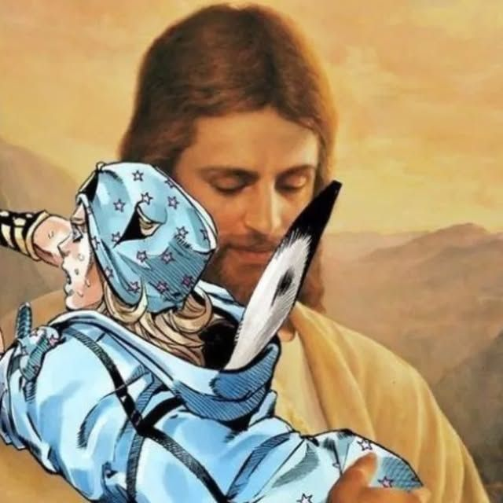

Funciona contra titãs mas com ele não!
Por: a
FIFA liberou o uso do DTM para Neymar, mas mesmo assim ele se machucou e o Brasil perdeu.
Notícias mais irrelevantes
Por: a
FIFA liberou o uso do DTM para Neymar, mas mesmo assim ele se machucou e o Brasil perdeu.

Por: a
Jesus faz aparição em Jojo Bizarre Adventures e converteu todos os ateus do mundo. .
a tecnologia se transforma todos os dias, mas quais as possiveis e atuais vantagens e desvantagens